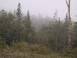

Rich in the rain
Trees and rain

The car
River
Jane and river
River and rocks

Flag at half mast
We turned the TV on and watched the coverage of the remembrance services being held at Ground Zero, the Pentagon and Pensylvania. Much of it was very moving stuff.
We went to breakfast and flicked through the papers and spoke to Reinhold about 9.11, our plans for the day and also our thoughts on Giacomos - he also thinks the service is bad. He was also telling us about David's (our co-host) new play which opens on the 13th - it's called Bee Luther Hatchee and sounds to be very interesting.
We headed off back to Logan Airport to collect our hire car. Logan airport seemed quiet, and we overheard lots of conversations about where people were this time last year - I remember sitting at my desk in London with the Radio on, being morbidly fascinated and horrified by the events that unfolded. Today we were on the T with our bags and were wished a "safe flight" by one guys on the car. Awareness was high.
We collected our car and started our adventure. We'd decided to head off to New Hampshire and to the White Mountains. The car wasn't too hard to get to grips with and we made good progress.
We stopped at North Woodstock for some lunch, eating at Peg's Family Restaurant, a reasonable, simple place. It was raining so we headed off along the beautiful Kancamagus highway through the rain and clouds and into sunshine again. We stopped at a couple of scenic views, and spent some time at the Lower Falls.
We headed into North Conway and started the hunt for a hotel. We looked at the Stonehurst Manor but decided that it was a bit too far out. Then we tried the Oxen Yoke Inn but discovered that the Eastern Slope Inn Resort handles the reservations for it. As we left I managed to scratch the car on a set of unmarked rocks used as a road edge - this was annoying and un-nerving but I guess its why we took CDW insurance. Eventually we decided to check in to the Eastern Slope.
We went for an explore of the town and found quite a few interesting looking shops and eateries before returning to our room and watching some of the news coverage.
We couldn't decide where to eat and the Lonely Planet wasn't much help as it just listed places rather than commenting on them. After a look around we went for Horsefeathers which was a good, if very filling, choice. We attempted a starter between us and a main course each but couldn't finish them. My Lobster Pot Pie was very nice indeed. We had a couple of pints of Tuckerman's Pale Ale each, a local Washington Valley beer, which was really tasty.
(7 images.)|
Rich in the rain | 
Trees and rain |
The car |
River |
|
Jane and river |
River and rocks |
Flag at half mast |